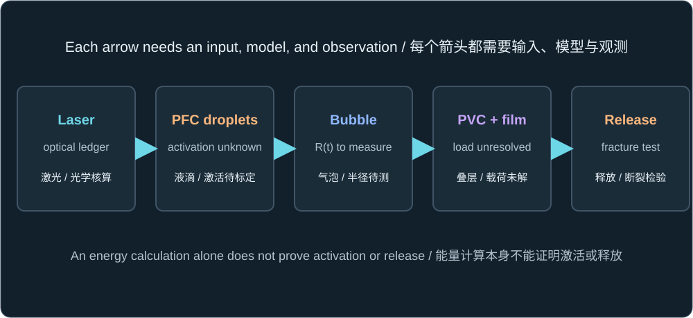
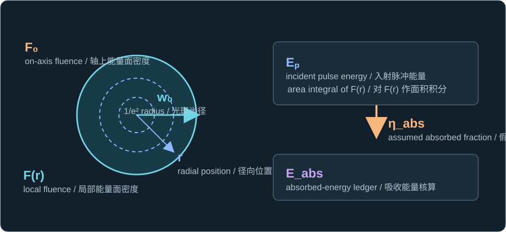
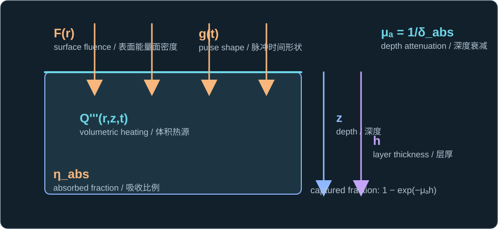
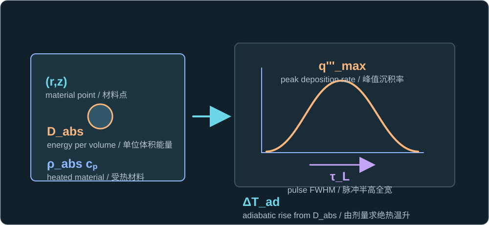
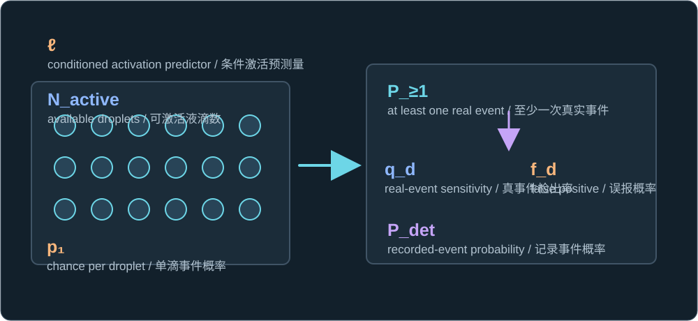
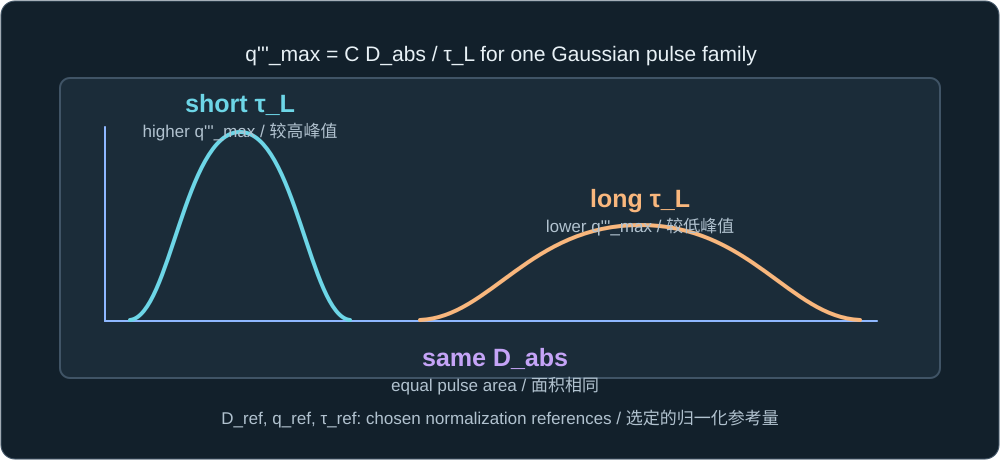

Historical lesson/review. Use the complete textbook course for the current study order. Former Chapters 4 and 5 are now Appendixes A and B.
历史课程／复习材料。当前学习顺序请使用完整教材课程。原第四、五章现为附录 A、B。
The target is a PFC-nanodroplet dispersion in an aqueous carrier near a PVC/transfer-film stack. The source calculations describe a reference scenario; they do not yet identify the target's PFC core, shell, absorber, concentration, activation law, or measured bubble trajectory. Work through the numerical reference answers directly below the questions, then give only the final brief synthesis in your own words.
研究对象是在 PVC／转印薄膜叠层附近、分散于水相载液中的全氟碳（PFC）纳米液滴。资料中的计算描述参考情景；尚未确定目标体系的 PFC 核心、壳层、吸收体、浓度、激活规律或实测气泡轨迹。请在每道题下展开数值参考答案核对，最后只需用自己的话给出简短综合说明。

Chapter 3 stops at activation probability. Bubble motion, boundary loading, and separation are later handoffs.
第三章止于激活概率。气泡运动、边界载荷和界面分离是后续交接环节。
A reference case is not a measured threshold
参考情景不是实测阈值
The inherited reference uses a 1064 nm, 10 ns laser pulse, a 25 µm Gaussian beam radius, an on-axis fluence of 0.10 J/cm², and an assumed absorbed fraction of 0.30. These numbers let us check units and energy conservation. The project theory labels them scenario inputs, while absorption, droplet formulation and count, event probability, and the bubble history require target-specific measurements. A number obtained from these inputs must keep that evidence label.
沿用的参考情景采用 1064 nm、10 ns 的激光脉冲，25 µm 的高斯光斑半径，轴上能量面密度 0.10 J/cm²，以及假定的吸收比例 0.30。这些数值可用于检查单位和能量守恒。项目理论将其标为情景输入；吸收率、液滴配方和数量、事件概率以及气泡历程仍需要目标体系的实测。由这些输入算出的数值也必须保留其证据属性。
Project sources: predictive-theory snapshot, §§1–3; supplied bilingual theory, source pages 1–2.
Gaussian fluence gives an incident-energy ledger
高斯能量面密度给出入射能量核算
The beam's quoted radius is where its fluence has fallen to one over e squared of its central value. Integrating the radial profile over concentric annuli produces half the energy of a uniform disk with central fluence and the same quoted radius.
所给光斑半径处的能量面密度已降到轴上值的 e 的负二次方。将径向分布按同心圆环积分，所得能量是以该半径、按轴上能量面密度均匀照明的圆盘能量的一半。
F(r) = F0 exp(−2r²/w0²)

Fluence is pulse energy per area; it is not instantaneous intensity.
能量面密度是单脉冲单位面积能量，不是瞬时光强。
Ep = πw0²F0/2
Eabs = ηabsEp
The project reference gives 0.98175 µJ incident and 0.29452 µJ assumed absorbed energy.
项目参考情景得到入射能量 0.98175 µJ、假定吸收能量 0.29452 µJ。
Neither value is an activation threshold. Absorbed energy is an accounting input until the actual absorber distribution and absorption fraction are measured.
两者都不是激活阈值。在实测吸收体分布和吸收比例之前，吸收能量只是核算输入。
A heat-source field needs its own conservation check
热源场需要单独的守恒检查
Let depth z start at the absorbing surface and let g(t) be a normalized pulse shape whose time integral is one. Under a Beer–Lambert depth assumption, the absorption coefficient μa is the reciprocal of the assumed depth δabs. The three primes on Q‴ and q‴ indicate a volumetric rate; they are not time derivatives.
令深度 z 从吸收表面起算，g(t) 为时间积分等于一的归一化脉冲形状。按照 Beer–Lambert 深度假设，吸收系数 μa 是假定深度 δabs 的倒数。Q‴ 和 q‴ 上的三个撇号表示单位体积速率，不是时间导数。
Q‴(r,z,t) = ηabsF(r)g(t)μaexp(−μaz)
μa = 1/δabs

Integrate over area, all time, and semi-infinite depth to recover Eabs.
对面积、全部时间及半无限深度积分，可恢复 Eabs。
A finite layer does not contain all of a semi-infinite exponential profile. For thickness h, the source deposits only the following fraction inside that layer:
有限厚度层不可能容纳半无限指数分布的全部能量。对于厚度 h，上述热源在该层内只沉积以下比例：
E0→h = Eabs[1 − exp(−μah)]
Specify whether ηabs means absorption over the entire profile or within this layer before renormalizing.
重新归一化之前，应明确 ηabs 表示整个分布范围内还是仅该层内的吸收比例。
Passing an energy-integral check verifies bookkeeping. It cannot establish that a droplet nucleated, expanded, or loaded the film.
热源积分通过能量检查，只能验证核算；不能证明液滴已经成核、膨胀或对薄膜施加载荷。
The same local energy can arrive at a different peak rate
相同局部能量可以具有不同的峰值沉积速率
At one material location, time integration of the volumetric heat source gives absorbed dose. For a Gaussian temporal pulse of full width at half maximum τL, a shorter pulse at the same dose has a higher peak rate.
在一个材料位置，对体积热源作时间积分得到吸收剂量。对于半高全宽为 τL 的高斯时间脉冲，相同剂量若在更短脉冲内沉积，峰值沉积速率更高。
Dabs(r,z) = ηabsF(r)μaexp(−μaz)
Dose has units J/m³; it is an energy density, not a probability.
剂量单位为 J/m³；它是能量密度，不是概率。
q‴max = Dabs√(4 ln 2/π)/τL

At fixed dose, doubling τL halves this peak rate for the same Gaussian pulse shape.
在剂量固定且高斯形状相同时，τL 加倍会使峰值速率减半。
ΔTad = Dabs/(ρabscp)
This screen omits heat loss and phase-change enthalpy; it does not predict a droplet's activation.
该筛查忽略散热和相变焓，不能预测液滴是否激活。
The inherited water-like heat-capacity estimate gives about 7.19 K for the homogenized reference source. A nanoscale absorber hot spot may differ sharply from that bulk estimate. Energy feasibility alone cannot identify a nucleation pathway or the eventual maximum bubble radius.
沿用的类水体积热容估计，使均匀化参考热源得到约 7.19 K 的温升。纳米尺度吸收体热点可能与这一体平均估计显著不同。仅有能量可用性不能确定成核路径或最终最大气泡半径。
One-droplet probability is not the reported onset
单滴概率不等于报告的起始点
The supplied theory proposes a conditional single-droplet logit model. Its predictor ℓ may depend on local dose, peak rate, pulse duration, size, formulation, batch, and shot history. The coefficients have not been calibrated for this target. Here p1 means a latent physical event for one droplet, such as phase change; detector effects enter the separate observation model below. The broader supplied predictor also lists detector-state covariates, so its endpoint must be defined carefully: do not count detection effects both inside ℓ and again through qd and fd. Phase change is not automatically inertial collapse or useful film loading.
所提供理论提出一个有条件的单滴 logit 模型。预测量 ℓ 可依赖局部剂量、峰值速率、脉冲时长、尺寸、配方、批次和照射历史。这些系数尚未针对目标体系标定。本章将 p1 定义为单滴潜在的真实物理事件概率，例如相变；探测效应则进入下方独立的观测模型。所提供资料的更广义预测量还列有探测器状态协变量，因此必须仔细定义事件终点：不能在 ℓ 内和 qd、fd 中重复计算探测效应。相变也不会自动等于惯性塌缩或有效薄膜加载。
p1 = 1/[1 + exp(−ℓ)]

No fitted ℓ or p1 is available for the target project yet.
目前尚无针对目标项目拟合得到的 ℓ 或 p1。
For a fixed known number of independent, equal-probability available droplets, take the complement of no events. A detector with per-event sensitivity qd and per-observation false-positive probability fd changes the reported probability again.
对于数量已知、事件独立且单滴概率相同的可激活液滴群体，用“没有任何事件”的补事件求至少一次事件的概率。若探测器对真实事件的检出率为 qd，每次观测的误报概率为 fd，报告概率还会进一步变化。
P≥1 = 1 − (1 − p1)Nactive
The transformation needs the count and independence assumptions.
此变换需要数量已知和事件独立的假设。
Pdet = 1 − (1 − fd)(1 − qdp1)Nactive
Observed onset depends on event definition, count, and detection.
观测起始点依赖事件定义、液滴数量和探测过程。
Within one exact Gaussian pulse family, dose, peak rate, and width are algebraically linked. A fluence sweep alone cannot identify separate effects for three freely fitted log predictors. Matched-dose pulses of different widths can test whether temporal delivery matters, but cannot isolate peak-rate effects from width effects. To fit all three independent coefficients, also vary temporal shape or remove a redundant term.
在同一种严格高斯脉冲族中，剂量、峰值速率和脉宽存在代数联系。只扫描能量面密度，无法独立识别三个自由拟合的对数预测量各自的效应。剂量相同而脉宽不同的脉冲可检验时间分配是否重要，但无法把峰值速率效应与脉宽效应分开。若要拟合全部三个独立系数，还需改变时间形状，或删去一个冗余项。
q‴max = C Dabs/τL, C = √(4 ln 2/π)

For this pulse family, the three logged predictors span only two independent directions.
对这类脉冲，三个取对数的预测量仅有两个独立方向。
Sources: supplied theory, source page 2; project theory snapshot, §3; Zhao et al., original optical-droplet study. The reported formulation-specific thresholds in that study are not target calibrations.
资料：所提供理论，原始资料第 2 页；项目理论快照，第 3 节；Zhao 等关于光学液滴激活的原始研究。该研究报告的配方特定阈值并非目标体系的标定值。
What has the reference pulse established?
参考脉冲究竟确立了什么？
Use this explicitly illustrative data set. The optical values reproduce the inherited project reference; the probability and detector values below are invented for this exercise. Keep these stages distinct.
使用以下明确标为示例的数据。光学数值复现沿用的项目参考情景；以下概率和探测器数值仅为本题设定。请始终区分各阶段。
| Quantity / 量 | Given value / 给定值 | Status / 属性 |
|---|---|---|
| Beam and pulse光束与脉冲 | F0 = 0.10 J/cm²; w0 = 25 µm; τL = 10 ns | Inherited scenario / 沿用情景 |
| Absorption and layer吸收与层厚 | ηabs = 0.30; δabs = 10 µm; h = 10 µm | Inherited/illustrative / 沿用／示例 |
| Volumetric heat capacity体积热容 | ρabscp = 4.17 × 10⁶ J/(m³ K) | Water-like estimate / 类水估计 |
| Event and detector事件与探测器 | p1 = 0.020; Nactive = 30; qd = 0.80; fd = 0.010 | Exercise only; not fitted / 仅供练习，未经拟合 |
Convert F0 to SI units; calculate incident pulse energy Ep and assumed absorbed energy Eabs. Explain why the Gaussian factor matters.
将 F0 换算为 SI 单位；计算入射脉冲能量 Ep 和假定吸收能量 Eabs。解释高斯系数为何重要。
Reference answer / 参考答案
Ep = πw0²F0/2
Eabs = ηabsEpThe factor one-half follows from radial integration, not from a uniform top-hat beam.
二分之一来自径向积分，而非均匀平顶光束。
F0 = 0.10 J/cm² = 1000 J/m². Thus Ep = π(25 × 10⁻⁶ m)²(1000 J/m²)/2 = 9.8175 × 10⁻⁷ J = 0.98175 µJ. Multiplying by the assumed 0.30 gives Eabs = 2.9452 × 10⁻⁷ J = 0.29452 µJ. Replacing the Gaussian with a uniform disk at F0 would double the calculated incident energy incorrectly.
F0 = 0.10 J/cm² = 1000 J/m²。因此 Ep = π(25 × 10⁻⁶ m)²(1000 J/m²)/2 = 9.8175 × 10⁻⁷ J = 0.98175 µJ。再乘假定的 0.30，得 Eabs = 2.9452 × 10⁻⁷ J = 0.29452 µJ。若错误地将其视为处处等于 F0 的均匀圆盘，入射能量会被高估一倍。
Using the unrenormalized semi-infinite depth profile, what fraction and energy lie inside the first h = 10 µm? If Eabs instead means the energy target specifically inside this finite layer, what must be clarified before implementing the source?
对未重新归一化的半无限深度分布，最初 h = 10 µm 厚度内包含多少比例和能量？若 Eabs 专指这一有限层内的目标能量，实现热源前必须澄清什么？
Reference answer / 参考答案
E0→h = Eabs[1 − exp(−μah)]
μa = 1/δabsThe same symbol ηabs must have one clearly stated spatial meaning.
同一个 ηabs 必须具有明确且唯一的空间含义。
Here μah = h/δabs = 1, so the captured fraction is 1 − e⁻¹ = 0.63212. The first 10 µm contains 0.29452 µJ × 0.63212 = 0.18617 µJ under the semi-infinite normalization. If 0.29452 µJ is defined as the target specifically within this layer, the depth source would need an additional normalization factor 1/0.63212 = 1.582, provided the physics supports that definition. Clarify whether ηabs refers to the full depth profile or this finite layer before applying such a factor.
此处 μah = h/δabs = 1，故层内比例为 1 − e⁻¹ = 0.63212。按照半无限区域的归一化，最初 10 µm 内包含 0.29452 µJ × 0.63212 = 0.18617 µJ。若把 0.29452 µJ 定义为该层内的目标能量，则在物理定义允许的前提下，深度热源还需要乘以归一化因子 1/0.63212 = 1.582。实施前须明确 ηabs 指整个深度分布还是这一有限层。
At the beam centre and deposition surface, calculate Dabs,0, Gaussian peak q‴max,0, and the adiabatic temperature-rise scale. If a second pulse has the same local dose but 20 ns FWHM and the same Gaussian shape, what happens to the peak rate? Does the temperature estimate prove activation?
在光束中心和沉积表面计算 Dabs,0、高斯峰值 q‴max,0 与绝热温升尺度。若第二个脉冲的局部剂量相同、半高全宽为 20 ns 且高斯形状相同，峰值速率如何变化？温升估计能证明激活吗？
Reference answer / 参考答案
Dabs(r,z) = ηabsF(r)μaexp(−μaz)
The on-axis surface is the maximum of this idealized profile.
轴上表面是该理想化分布的最大值位置。
q‴max = Dabs√(4 ln 2/π)/τL
The Gaussian shape factor is about 0.93944.
高斯形状系数约为 0.93944。
ΔTad = Dabs/(ρabscp)
The given heat capacity is a water-like estimate, not a measured PFC or absorber property.
所给体积热容是类水估计，而非实测 PFC 或吸收体物性。
With μa = 1/(10 µm) = 10⁵ m⁻¹, Dabs,0 = 0.30(1000)(10⁵) = 3.00 × 10⁷ J/m³. The 10 ns Gaussian peak is q‴max,0 = (3.00 × 10⁷)(0.93944)/(10 × 10⁻⁹) = 2.82 × 10¹⁵ W/m³. The estimated rise is ΔTad,0 = (3.00 × 10⁷)/(4.17 × 10⁶) = 7.19 K. At 20 ns and the same dose and shape, the peak rate halves to 1.41 × 10¹⁵ W/m³; the simple adiabatic rise stays 7.19 K. Neither result includes phase-change enthalpy or proves that a PFC droplet activated.
由 μa = 1/(10 µm) = 10⁵ m⁻¹，得 Dabs,0 = 0.30(1000)(10⁵) = 3.00 × 10⁷ J/m³。10 ns 高斯脉冲的峰值为 q‴max,0 = (3.00 × 10⁷)(0.93944)/(10 × 10⁻⁹) = 2.82 × 10¹⁵ W/m³。估计温升为 ΔTad,0 = (3.00 × 10⁷)/(4.17 × 10⁶) = 7.19 K。剂量和形状相同而脉宽变为 20 ns 时，峰值速率减半至 1.41 × 10¹⁵ W/m³；简化绝热温升仍为 7.19 K。两者均未包含相变焓，也不能证明 PFC 液滴已经激活。
For the separate exercise-only activation scenario, calculate the chance of at least one real event among 30 available droplets and the chance of a recorded event. Identify the assumptions that make these formulas usable.
对另行设定、仅供练习的激活情景，计算 30 个可激活液滴中至少一次真实事件的概率，以及记录到事件的概率。指出使用这些公式所需的假设。
Reference answer / 参考答案
P≥1 = 1 − (1 − p1)Nactive
This is an event probability for the declared endpoint, not an impact probability.
这是所定义事件终点的概率，不是冲击概率。
Pdet = 1 − (1 − fd)(1 − qdp1)Nactive
Detection is an additional observation model.
探测过程是额外的观测模型。
For p1 = 0.020 and Nactive = 30, P≥1 = 1 − 0.98³⁰ = 0.4545. With qd = 0.80 and fd = 0.010, Pdet = 1 − 0.99(1 − 0.80 × 0.020)³⁰ = 0.3898. These results require a known fixed active count, independent equal-probability droplets, independent detection of each real event, and the declared false-positive model. The p1 value is invented for arithmetic practice; it is not fitted to the project.
取 p1 = 0.020、Nactive = 30，得 P≥1 = 1 − 0.98³⁰ = 0.4545。再取 qd = 0.80、fd = 0.010，得 Pdet = 1 − 0.99(1 − 0.80 × 0.020)³⁰ = 0.3898。这些结果要求已知固定的可激活液滴数、液滴事件独立且单滴概率相同、逐个真实事件的独立检出，以及所声明的误报模型。p1 是为算术练习设定的值，并非项目拟合结果。
Within the exact same-shape Gaussian pulse family, can a fluence-only sweep identify three independent coefficients multiplying the logarithms of dose, peak rate, and pulse width? State the mathematical reason, then name the next observations required before claiming an actual bubble and film load.
在时间形状完全相同的高斯脉冲族内，仅扫描能量面密度能否独立识别剂量、峰值速率和脉宽这三个对数项的系数？说明数学原因，再指出声称实际产生气泡和薄膜载荷之前需要哪些后续观测。
Reference answer / 参考答案
q‴max = C Dabs/τL, C = √(4 ln 2/π)
Changing fluence scales dose and rate together at fixed width.
脉宽固定时改变能量面密度，会同时缩放剂量与峰值速率。
ln(q‴max/q‴ref) = ln(Dabs/Dref) − ln(τL/τref)
The identity holds when the reference quantities use the same Gaussian factor C.
参考量采用相同高斯系数 C 时，该恒等式成立。
No. The three log columns are linearly dependent: at fixed width, a fluence sweep changes only dose and its proportional peak rate. Even varying width within the same exact Gaussian family leaves only two independent columns. A matched-dose width contrast can test whether temporal delivery matters, but not whether peak rate or width is responsible. Estimating three separate coefficients also needs independent temporal-shape variation or removal of one redundant predictor. Establish target activation/no-activation with a known active count and calibrated detector, then synchronously measure bubble contour R(t), centroid and event branch. A time-resolved film-pressure or calibrated deflection record is still needed to connect that bubble to a film load; energy normalization alone does not do so.
不能。三个取对数的数据列线性相关：脉宽固定时，扫描能量面密度只会同时改变剂量及与其成比例的峰值速率。即使在同一严格高斯脉冲族内改变脉宽，也仍只有两个独立数据列。相同剂量下改变脉宽可检验时间分配是否重要，但不能区分原因是峰值速率还是脉宽。要估计三个独立系数，还需要独立改变时间形状，或删去一个冗余预测量。应先在已知可激活数量、已标定探测器的条件下测量目标体系的激活与未激活事件，再同步测量气泡轮廓 R(t)、质心及事件分支。还需时间分辨的薄膜压力或经标定的挠度记录，才能将气泡与薄膜载荷相连接；能量归一化本身不能做到这一点。
Brief response for mastery: In two or three sentences, explain why a correctly normalized 0.29452 µJ absorbed-energy calculation and even a hypothetical measured group-event fraction at 0.10 J/cm² would still not prove a target-specific activation threshold, predict R(t), or establish film release. Name the next most useful measurement.
用于确认掌握程度的简短回答：请用两三句话说明：为何正确归一化得到的 0.29452 µJ 吸收能量计算，以及假设在 0.10 J/cm² 下实测到某一群体事件比例，仍不能证明目标体系的激活阈值、预测 R(t) 或确定薄膜释放？请指出下一项最有用的测量。
Reference response / 参考回答
The absorbed energy is conditional on the assumed optical fraction and profile; a group-event fraction additionally depends on the number of active droplets, detector and event definition, and cannot by itself identify a single-droplet activation law. Neither number supplies a measured bubble trajectory, boundary load, or interfacial fracture response. First calibrate local absorption and event detection while recording size and active count; then measure synchronized branch-labeled bubble contour and film motion before assessing release.
吸收能量取决于假定的光学吸收比例和分布；群体事件比例还依赖可激活液滴数量、探测器与事件定义，单凭它不能识别单滴激活规律。两者都没有提供实测气泡历程、边界载荷或界面断裂响应。应先标定局部吸收与事件探测并记录尺寸和可激活数量；随后同步测量按事件分支标记的气泡轮廓和薄膜运动，再评估释放。
Check the arithmetic in the panels, then send only your brief synthesis. Ask about any assumption or unit that is unclear.
请先用答案面板核对算术，再只提交简短综合说明。若假设或单位不清楚，可随时提问。